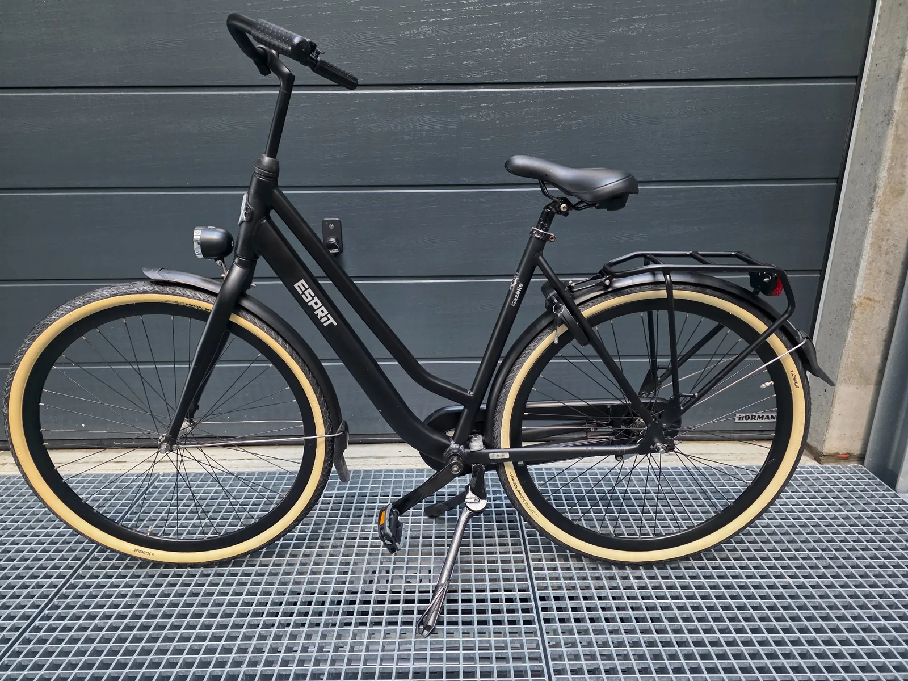

Fietsreparatie aan huis in Ter Aar
Woont u in Ter Aar en zoekt u een fietsenmaker zonder uw fiets eerst te hoeven vervoeren? Fiets HerstelHuis Nieuwkoop komt waar mogelijk naar u toe voor fietsreparatie en onderhoud op locatie. We helpen met gewone fietsen, e-bikes, fatbikes en bakfietsen.

Een mobiele fietsenmaker voor Ter Aar
Een fiets met een lekke band, slecht werkende remmen of een e-bike met een storing is lastig te vervoeren. Daarom bieden we in Ter Aar en omliggende plaatsen service aan huis. U kunt vooraf via WhatsApp kort uitleggen wat er aan de hand is; foto's of een korte video helpen vaak bij een eerste inschatting.
Gewone fietsen
Reparatie en onderhoud aan stadsfietsen, moederfietsen, transportfietsen en andere dagelijkse fietsen.
E-bikes
Onderhoud, storingsonderzoek en reparatie aan elektrische fietsen. Voor Bosch-systemen bieden we extra specialistische kennis.
Fatbikes
Reparatie en onderhoud aan remmen, aandrijving, banden en elektrische onderdelen van fatbikes.
Bakfietsen
Onderhoud en reparatie aan gewone en elektrische bakfietsen. We zijn daarnaast Urban Arrow specialist.
Geen voorrijkosten binnen ons werkgebied
Ter Aar valt binnen ons reguliere werkgebied. Daardoor kunnen we veel reparaties en onderhoudswerkzaamheden op locatie uitvoeren zonder extra voorrijkosten. Ook omliggende plaatsen zoals Langeraar, Papenveer, Korteraar en Nieuwkoop vallen binnen ons regionale werkgebied.
Voor werkzaamheden die niet verstandig op locatie kunnen worden uitgevoerd, bespreken we vooraf wat de beste oplossing is.
Ook voor e-bike, fatbike en bakfiets
Naast algemene fietsreparatie kunt u bij ons terecht voor specialistische werkzaamheden. Bekijk ook onze pagina's over e-bike reparatie, Bosch e-bike reparatie, fatbike reparatie en bakfiets reparatie.